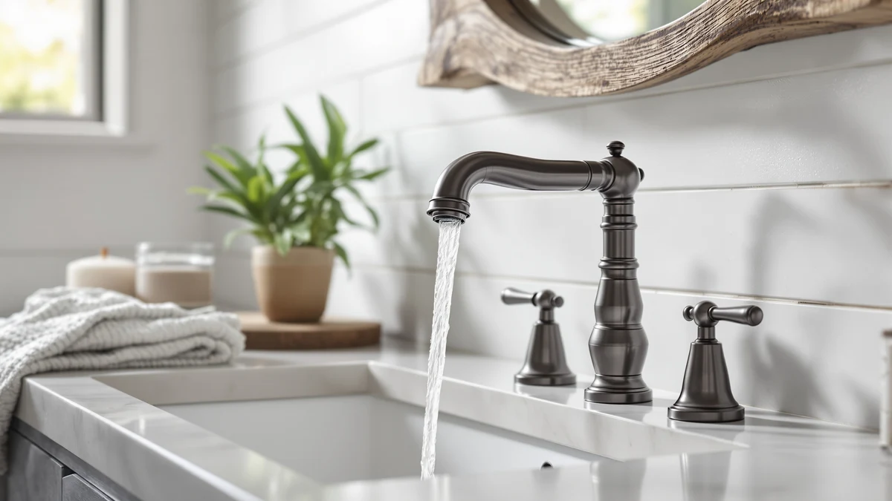

Best Brushed Nickel Sink Faucets of 2026: 7 Top Picks
Prices and picks verified as of August 2026. Independent, reader-supported reviews.


Quick Answer
The best brushed-nickel sink faucets pair a warm, spot-hiding finish with a solid brass body, and the Kablle Bathroom Faucet with Pull delivers both for $49.99. It led the seven faucets we compared on finish consistency and value, while the $23.39 Ifaucet runner-up covers tight budgets.
Our pick: Kablle Bathroom Faucet with Pull, $49.99 Check Price on Amazon
Bottom line: our top pick is the Kablle Bathroom Faucet with Pull Down Sprayer 3 Holes at $49.99. The best budget option is the Bathroom Faucets at $23.39.
Things to Know Before You Buy
- Brushed nickel hides water spots and fingerprints better than chrome, which matters if you skip the daily wipe-down.
- Check your sink's hole configuration before you buy. Single-hole and 4-inch faucets do not interchange without a deck plate.
- A brass body outlasts zinc alloy at the connections. All seven of the brushed-nickel sink faucets in this guide use brass construction.
- Prices in this group run from $23.39 to $150.38. Past $100 you pay for brand support and refinement, not better water delivery.
- Matching hardware completes the look. Pair your faucet with brushed-nickel towel bars and drain trim, or the mixed metals will read as an accident.
The best brushed-nickel sink faucets give you the one finish that forgives a busy bathroom: a warm, low-glare surface that shrugs off the water spots that make chrome look dirty by Tuesday. We compared seven brushed-nickel models for this guide, from a $23.39 budget unit to a $150.38 Delta, and ranked them on finish quality, brass construction, and what you get for each extra dollar.
The Kablle Bathroom Faucet with Pull took the top spot at $49.99. It pairs an even, consistent brushed-nickel finish with a brass body, and its pull-out design adds a convenience the fixed spouts in this group cannot match. If you want to spend less, the $23.39 Ifaucet covers the basics without embarrassment, and the two Delta Arvo models answer the buyer who wants a legacy brand behind the handle.
Below you'll find our full picks, the criteria we used, a comparison table, and answers to the questions buyers ask most about brushed-nickel faucets. Each product section includes the flaws we found, because a $50 faucet with a hidden weakness costs more than a $110 one that lasts.
Why You Should Trust Us
I'm Ilane Tall, and I run Best Bathroom Faucets, where I research and compare bathroom fixtures for US buyers. For this guide to the best brushed-nickel sink faucets I worked through the seven models below spec by spec, compared finish photos across lighting conditions, and read owner feedback on each one, weighting reports that came in after months of daily use over first-week impressions. I have no relationship with any faucet brand. When you buy through our links we earn an affiliate commission, and that commission stays the same whichever faucet you pick, so we gain nothing by steering you toward one model over another.
How We Picked
We started with the brushed-nickel sink faucets on Amazon that had enough purchase history to judge, then cut the field hard. Zinc-alloy bodies went first, since that metal corrodes at the threads years before brass does. We dropped models with painted-on nickel-look finishes, which peel around the handle within a year or two of daily use. We also cut anything without a clear parts picture, because a faucet you cannot get a replacement cartridge for is a future leak with a countdown.
That left seven brushed-nickel faucets with brass construction across three price tiers: under $25, the $45 to $50 middle where most buyers land, and Delta's $110 to $150 territory. We kept both Delta Arvo variants in the guide because they answer a question the import brands cannot, which is what the extra money buys you.
How We Compared
We evaluated each brushed-nickel sink faucet against the same checklist. Finish consistency came first: we compared manufacturer photos against customer photos in daylight and vanity lighting, looking for the greenish or yellow cast that separates cheap plating from a proper brushed-nickel finish. Then we checked build details, including handle feel, the pop-up drain assembly, and how much of the mounting hardware ships in the box. Finally we tracked owner-reported failures over time for each model, weighting leaks at the base and finish wear around the handle most heavily, since those two problems end more faucets than any defect in the valve itself.
Our Picks

Kablle Bathroom Faucet with Pull
What we like
- Consistent brushed-nickel finish that matches across the spout, handle, and base
- Brass body at a price where most competitors use zinc alloy
- Pull-out design adds reach for cleaning the basin and quick rinses
Flaws but not dealbreakers
- Kablle is a young import brand, so long-term parts support is unproven
- Thin installation instructions; plan on a general how-to video
| Material | Brass + finish |
| Size | — |
The Kablle earns the top spot in this guide to the best brushed-nickel sink faucets by getting the fundamentals right at $49.99. The finish reads as true brushed nickel, warm and evenly grained rather than the flat gray some budget brands pass off, and it matches across the spout, handle, and base. Underneath sits a brass body, which matters more than any visible detail. Brass threads survive decades of hot and cold cycling. Zinc alloy, the usual material at this price, does not.
The pull-out design gives you reach a fixed spout cannot, which turns basin cleaning and a quick hair rinse from a contortion into a ten-second job. Two caveats keep this from being a blind buy. Kablle lacks Delta's track record, so if you want a faucet with a long history of cartridge availability behind it, spend up for the Arvo. And the included instructions assume you have installed a faucet before. Neither issue changes the math for most buyers. This is the strongest value of the seven.

Bathroom Faucets Bathroom Faucet 3
What we like
- Lowest price in the group at $23.39 with brass construction intact
- Clean mid-size shape that fits most vanity styles
- Low stakes if your renovation plans change in a few years
Flaws but not dealbreakers
- Expect finish wear around the handle sooner than on the pricier picks
- Included drain hardware feels like an afterthought
| Material | Brass + finish |
| Size | Middle |
At $23.39, the Ifaucet undercuts the rest of this brushed-nickel sink faucet group by about half, and it keeps the one spec we refused to compromise on: a brass body. The shape is plain in the good sense, a mid-size faucet that disappears into most vanity setups instead of fighting them. For a rental unit, a guest bath, or a flip where the budget has twelve other line items, plain and reliable is the assignment.
The compromises stay within reason. At this price, expect the finish to show wear around the handle years sooner than the Kablle or the Deltas will, and treat the included drain hardware as a bonus rather than a plan. None of that undermines the case. You get the brushed-nickel look, brass underneath, and $26 left over compared with our top pick, which covers a good set of supply lines and the microfiber cloth that keeps any nickel finish looking new.

Ultimate Unicorn Waterfall Bathroom Sink
What we like
- Waterfall spout turns an ordinary handwash into the room's design moment
- 4-inch size matches the most common US sink drilling
- Brushed-nickel finish keeps the dramatic shape from looking flashy
Flaws but not dealbreakers
- Waterfall spouts splash more in shallow sinks
- Open spout channel collects mineral film in hard-water homes and needs regular wiping
| Material | Brass + finish |
| Size | 4 Inch |
The Ultimate Unicorn takes the opposite approach from the rest of our brushed-nickel sink faucet picks. Instead of blending in, its waterfall spout sends a flat sheet of water into the basin, and guests notice. At $46.66 it prices the theatrics below the plain Kablle, which makes it the cheapest way in this group to make a powder room feel deliberate. The 4-inch format matches the most common US sink drilling, so it slots into the sink you already have.
Waterfall faucets carry two costs that the product photos skip. In a shallow basin the flat stream splashes more than a standard aerated flow, so measure your sink depth before you commit. And the open channel that shapes the waterfall also catches mineral deposits, which means hard-water households will wipe it weekly to keep the sheet of water even. Accept those chores and you get the most memorable faucet of the seven, in a brushed-nickel finish that keeps the drama tasteful.

Delta Arvo Brushed Nickel Bathroom
What we like
- Delta's parts availability means a worn cartridge is a repair, not a replacement faucet
- Cool, uniform brushed-nickel finish that pairs with Delta's other bathroom hardware
- Established US brand support reachable years after purchase
Flaws but not dealbreakers
- At $150.38 it costs three times our top pick
- The name carries a premium on a faucet this simple
| Material | Brass + finish |
| Size | Pack of 1 |
The Arvo answers the question every import in this guide raises: what does tripling the budget buy? At $150.38 the faucet itself does the same job as the Kablle. The difference lives in what surrounds it. Delta has sold faucets in the US for decades, which means replacement parts stay in stock and someone at the company will still pick up the phone when a drip shows up in year eight. For a primary bathroom in a home you plan to keep, that continuity is the product.
The finish holds up its end. Delta's take on brushed nickel runs cooler and more uniform than the budget brands manage, and it matches the rest of Delta's bathroom hardware if you build out the room in one line. Our reservation is price against the field, since $150.38 buys three Kablles and change, and nothing about the water delivery justifies the gap on its own. Buy the Arvo for the decade of support behind it, not for anything you can see at the sink.

Delta Arvo 1 Hole Pull
What we like
- Single-hole design suits modern vanity tops with one drilling
- Same Delta parts and support network as the pricier Arvo
- Costs about $40 less than the other Arvo in this guide
Flaws but not dealbreakers
- Still more than four times the price of the Ifaucet
- Older three-hole sinks need a deck plate to cover the outer drillings
| Material | Brass + finish |
| Size | — |
This second Arvo brings Delta's case down to $110.01 in a single-hole format. If your sink or countertop has one drilling, the choice between the two Deltas makes itself, and you save about $40 against the other Arvo in the process. Everything that recommends its sibling applies here: the same parts pipeline and reachable support, plus a brushed-nickel finish consistent enough to anchor a full set of matching Delta bathroom hardware.
The single-hole format cuts both ways. On a modern one-hole vanity top it installs clean, with no deck plate and no wasted holes. On an older three-hole sink you will need a deck plate to cover the outer drillings, which adds a seam that traps grime and dilutes the streamlined look you paid for. Match the faucet to your drilling and this Arvo is the most sensible way into Delta ownership in this group of brushed-nickel sink faucets. Mismatch it and the $23.39 Ifaucet starts looking rational again.

FELIXBATH Bathroom Sink Faucet with
What we like
- Brass construction at $45.04, in the group's value sweet spot
- Understated profile that works across traditional and modern bathrooms
- Brushed-nickel finish that holds its own next to picks costing twice as much
Flaws but not dealbreakers
- Short brand history, so treat long-term durability claims with patience
- No standout feature to separate it from the mid-tier pack
| Material | Brass + finish |
| Size | — |
The FELIXBATH sits $5 under our top pick at $45.04 and plays the same game: brass body, brushed-nickel finish, import pricing. It earns its slot in this roundup of the best brushed-nickel sink faucets as the sensible alternative when the Kablle goes out of stock or its price drifts up, which happens with import brands more often than the listings admit. The profile stays conservative, and that reads as a feature. A faucet without a signature flourish also has nothing to look dated in six years.
Judged on its own, the FELIXBATH covers the checklist. Judged against the field, it lacks a reason to pick it first. The Kablle adds the pull-out reach for $5 more, the Ifaucet undercuts it by about $22 for the basics, and the Deltas bring the support network it cannot match. That leaves the FELIXBATH as this guide's contingency pick, the faucet you buy with confidence when your first choice is unavailable, and there are worse roles. It passes each fundamental we screened for.

BRAVEBAR Brushed Nickel Bathroom Faucet
What we like
- Brass body at $49.90, matching the top pick's construction
- Even brushed-nickel finish across the visible surfaces
- Styling that pairs with common brushed-nickel bathroom hardware
Flaws but not dealbreakers
- Competes head-on with the Kablle at the same price and loses on features
- Young brand with a short track record for parts and support
| Material | Brass + finish |
| Size | — |
The BRAVEBAR closes out our picks at $49.90, nine cents under the Kablle and aimed at the same buyer. The case for it comes down to styling. Its take on the brushed-nickel sink faucet runs a little different from the Kablle's, and if its lines suit your vanity better, nothing in the construction should scare you off. The body is brass, the finish looks even across the visible surfaces, and owner feedback tracks with the rest of the mid-tier group.
Priced dime-for-dime against our top pick, though, the BRAVEBAR needs a tiebreaker it does not have. The Kablle's pull-out reach is a daily convenience, and at identical money that feature decides it for most bathrooms. BRAVEBAR also shares the young-brand caveat that follows Kablle and FELIXBATH: the faucet may outlast the company's parts support. Pick it when its look wins your comparison, and go in knowing you chose it on style, which is a legitimate way to choose a fixture you see twenty times a day.
Quick Comparison
| Product | Material | Price | Rating | Best for | Get it |
|---|---|---|---|---|---|
| Kablle Bathroom Faucet with Pull | Brass + finish | $49.99 | 4 | Most bathrooms; the best brushed-nickel sink faucet value overall | View on Amazon → |
| Bathroom Faucets Bathroom Faucet 3 | Brass + finish | $23.39 | 4 | Rentals and tight budgets | View on Amazon → |
| Ultimate Unicorn Waterfall Bathroom Sink | Brass + finish | $46.66 | 4 | Powder rooms wanting a waterfall statement | View on Amazon → |
| Delta Arvo Brushed Nickel Bathroom | Brass + finish | $150.38 | 4 | Buy-once homeowners who value brand support | View on Amazon → |
| Delta Arvo 1 Hole Pull | Brass + finish | $110.01 | 4 | Single-hole sinks, Delta reliability for less | View on Amazon → |
| FELIXBATH Bathroom Sink Faucet with | Brass + finish | $45.04 | 4 | Backup mid-tier pick when the Kablle is unavailable | View on Amazon → |
| BRAVEBAR Brushed Nickel Bathroom Faucet | Brass + finish | $49.90 | 4 | Style-first shoppers at the $50 line | View on Amazon → |
The Competition
The rest of the brushed-nickel sink faucet field fell to a handful of repeating failures. The largest group died on materials: zinc-alloy bodies dressed in a nickel-look finish, priced like brass and destined to corrode at the connections first. We cut them regardless of rating, because that failure shows up in year three, long after the review window closes.
A second group failed on the finish itself. Plated coatings with a yellow or greenish cast photograph as brushed nickel and then look wrong next to actual nickel hardware in your bathroom. Others showed peeling around the handle contact points in owner photos within the first year. A finish that cannot survive hands has no business on a faucet.
The last cuts were practical. Several strong candidates shipped without a clear parts picture or moved in and out of stock too often to recommend in a guide people read months from now. If one of our picks goes unavailable, the FELIXBATH exists for that exact case.
Our verdict after all of it: among the best brushed-nickel sink faucets you can buy in 2026, the Kablle Bathroom Faucet with Pull is the one we would put on our own sink, with the Delta Arvo as the buy-once alternative for anyone who wants a legacy brand behind the handle.
Frequently Asked Questions
Is brushed nickel a good finish for a bathroom sink faucet?
Brushed nickel is one of the most practical finishes you can put on a sink faucet. The brushed texture scatters light, so water spots and fingerprints show far less than they do on polished chrome, and the warm gray tone pairs with most vanity colors. It usually costs a little more than chrome on the same model but needs less frequent wiping to look clean.
How do I clean a brushed nickel faucet without damaging the finish?
Use warm water, a drop of dish soap, and a soft cloth, then dry the faucet. Wipe along the grain of the brushing rather than in circles. Skip abrasive pads, bleach, and acidic cleaners like undiluted vinegar, which can dull or discolor the finish over time. For hard-water spots, a 50/50 vinegar and water mix applied briefly and rinsed off is as aggressive as you should get.
Which brushed nickel sink faucet is the best overall?
The Kablle Bathroom Faucet with Pull is the best brushed-nickel sink faucet for most bathrooms at $49.99. It combines a brass body with an even, consistent finish and a pull-out design at a fraction of the price of comparable name-brand models. If you want established brand support instead, the Delta Arvo at $150.38 is the buy-once alternative.